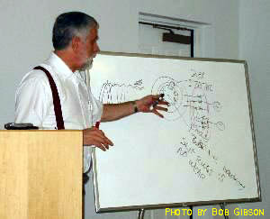
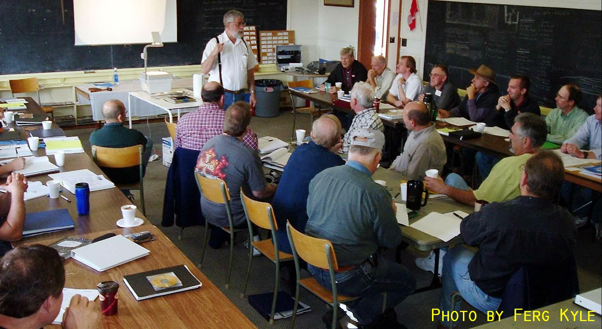

AeroElectric Connection - Weekend Seminars
The AeroElectric Connection Presents:
Weekend Seminars
with
Bob Nuckolls
Engineer, Teacher, Author and Publisher of Electrical Systems Information Texts
for Amateur Airplane Builders.
46 years experience in aircraft systems maintenance, design, troubleshooting and fabrication. Publisher of
the AeroElectric Connection: The definitive work in owner-built and maintained (OBAM) aircraft electrical
systems. 20,000+ readers in 30 countries for 20 years.
In 2008 we gave up a venerable collection of overhead projector
slides and changed to a Power Point presentation enhanced by a
digital sketch pad, and extensive photographic capabilities.
Attendees will take home electronic copies of the presentation
materials. In addition to the reference value of the PP files,
we'll encourage attendees use the materials to support any
presentations they might choose offer to their fellow builders.

In the writer's not so humble opinion, the future of personally owned, single-engine
airplanes is deeply rooted in owner-built and maintained aviation. The certified
general aviation fleet is DROPPING by thousands of airplanes per year. There's no
indications that production lines will ever again run at the heady rates of yesteryear
when over 10,000 airplanes were produced every year in Wichita alone. Certified
aviation is unlikely replace more than a fraction of these losses. If you want performance in a small
aircraft, it cannot be purchased at prices you and I can afford. The alternative is
obvious - build it. . . .
Aircraft fabrication was once a "black art" practiced only by the heavily
regulated, taxpayer subsidized aircraft industry. Today ordinary citizens
have access to technologies and materials only the military and NASA could
afford 25 years ago. A visit to Oshkosh any summer demonstrates how personal
initiative and ingenuity has left institutionalized aviation in the dust. The
AeroElectric Connection offers this course to broaden the technology base in
support of builders who dare to dream of flying their own handiwork.
Some of the world's finest airplanes are being built in basements and garages.
Although the vast majority of participants in the OBAM aircraft community are
amateurs, they worry about EVERYTHING. If you don't know how to go about it,
you'll get on the 'net and find help. If you trash a part, it gets pulled
off and replaced. The craftsmanship that goes into a successfully completed
OBAM aircraft is on a par with and often head-and-shoulders above that of
the spam cans.
Designing for Failure Tolerance:
Many builders purchase "aircraft quality" or "military spec" parts
suffering from the mistaken idea that use of such parts increases system
reliability; this is simply not so.
Our task is to teach you how to fabricate reliable FLIGHT SYSTEMS
using ordinary parts chosen for price and performance features . . . NOT
simply for their specifications. System reliability is driven more by HOW
parts are used as opposed to WHAT parts are used.
Each attendee will receive a CD Rom with all of the downloadable
articles and wirebooks from this website. The CD also contains copies of
the Power Point files that Bob will use in the presentation.
This seminar is designed to mitigate one more batch of worries.
We can't make an engineer of you in a weekend. Two things should happen: (1) you're
going to be a lot more comfortable with starting - it's just a big box of simple-pieces
and (2) as your project progresses, you're now networked with myself and hundreds
of others who will help with solutions to new worries in any manner that we can.
Before you purchase any electrical system parts or drill any holes
in the panel, look this website over closely and check out the
reference materials.
If at all possible, join us for a weekend of discussions to get your questions answered.
Schedule For Saturday
8:00 - 8:30 Registration
- Hand outs, getting acquainted . . . there might even be coffee and donuts . . .
8:30 - 11:30 morning session:
- Parts Selection - "What's all this 'aircraft quality' Stuff Anyhow?"
- Failure Mode Effects Analysis - Confidence by Design
- DC Power Fundamentals - Understanding "the Force"
- Batteries
- Engine Driven Power Sources
- Voltage Regulators
- Grounding
- Over Voltage Protection
- Electrical System Instrumentation
11:30 - 12:30 Break for lunch
12:30-5:00 Afternoon Session
- Wire Selection and Installation
- Wire Termination and Connectors
- Circuit Protection
- Switches Relays and Contactors
- Lighting and Lighting Controls
- Antennas and Feedlines (including antenna analyzer demonstration)
- Engine Instrumentation
Saturday Evening
Depending on location, facilities and local host's planning we may get together to share an evening meal and swap a few stories . . .
Schedule for Sunday
8:00-12:00 morning session:
- Noise - Antagonist, propagation paths and victims . . . .
- Tools, Wiring Techniques and Parts Selection Philosophy
- Hands-on demonstrations of useful crimp tools and soldering techniques.

There is a great deal of advance planning associated with organizing
this program. We need to reserve a facility big enough to handle everyone
we think will attend. A minimum number of attendees are necessary to offset
travel and facilities expenses. Seating will be limited.
Click on the reservation form for your program of choice below. . . .
Tuition: $185.00
- The AeroElectric Connection is the textbook for this course. If don't
own a copy, you may secure a E-Book copy of the latest revision at the seminar for
a special discounted price of $21.50 postage paid. Receive your book in advance
of the seminar by adding a request for immediate mailing in the comments box of
the reservation form . . .
- All products and
services from the AeroElectric Connection are offered with an assurance
of satisfaction. If you don't believe the seminar was worth the dollars
you paid, then let me know how much you believe it was worth. Your credit card
is not charged until after the seminar. You'll not be charged for more than
you believe the program was worth.
Proposed Programs
If you'd like to see a program presented in your part of the country, Click here to contact Bob at AeroElectric Connection and let's talk about it. It would help if you have a facility in mind . . . it's nice when we can use an aviation related facility. Does your EAA chapter has a room where we can seat up to 30 folks at tables . . . or perhaps an FBO near you has a meeting room on the airport? In any case, it won't happen until rattle our cage and get the ball rolling . . . |